🤖
Robot Stories
NASA's abandoned robots tell kids their own stories, in English and Arabic.
🏆 Challenge: Abandoned but not Forgotten
🚀 NASA Space Apps Challenge 2026 · Nablus
Team
The Final Countdown
Palestine Polytechnic University (PPU), Hebron
- Islam Akram Salem Jaradat
- Malak Emad Jawdat El-Masri
- Mostafa Wisam Al-Natsheh
- Osama Nabeel Salah Abu Al-Halaweh
- Nisreen Mohammad Khader Al-Ajlouni
The problem
Amazing robots, forgotten stories
SINCE 1960sNASA has left robots on the Moon, on Mars and in deep space…
ANDeach one made important discoveries.
BUTmost kids have never heard their stories. They meet space history as dates and names.
THEREFOREwe let the robots tell their own stories, so kids remember them.
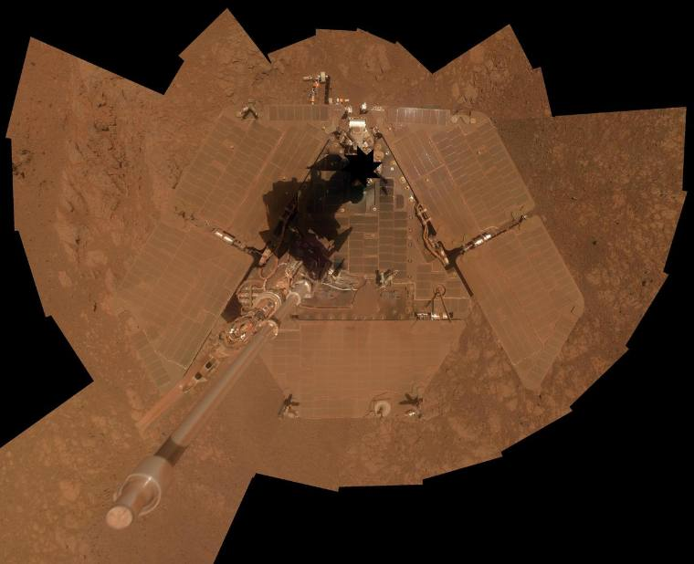
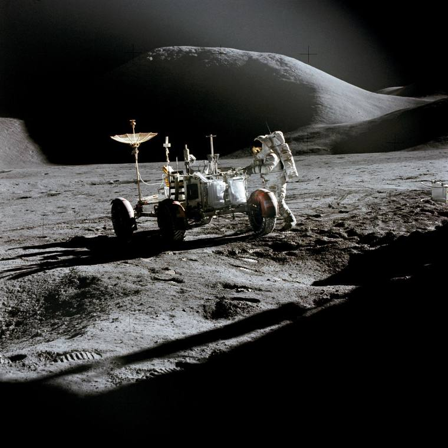
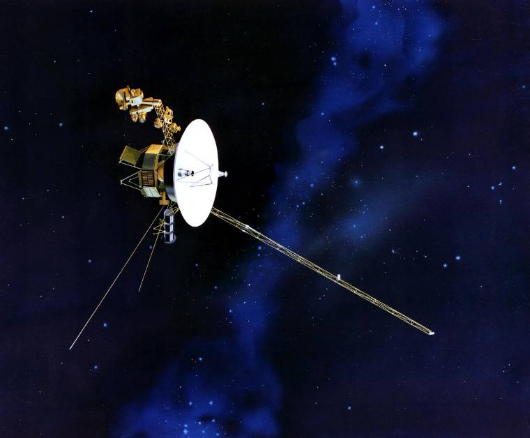
Our solution
The robots tell their own stories
🎬
Short story videos36–44 seconds, in the robot's own voice:
"I was supposed to work for only 90 Martian days!"
"I was supposed to work for only 90 Martian days!"
🛟
Your missionRescue the forgotten stories: answer one question per robot to earn its badge.
🪐
17 robots · 3 worldsThe Moon (5), Mars (7) and deep space (5).
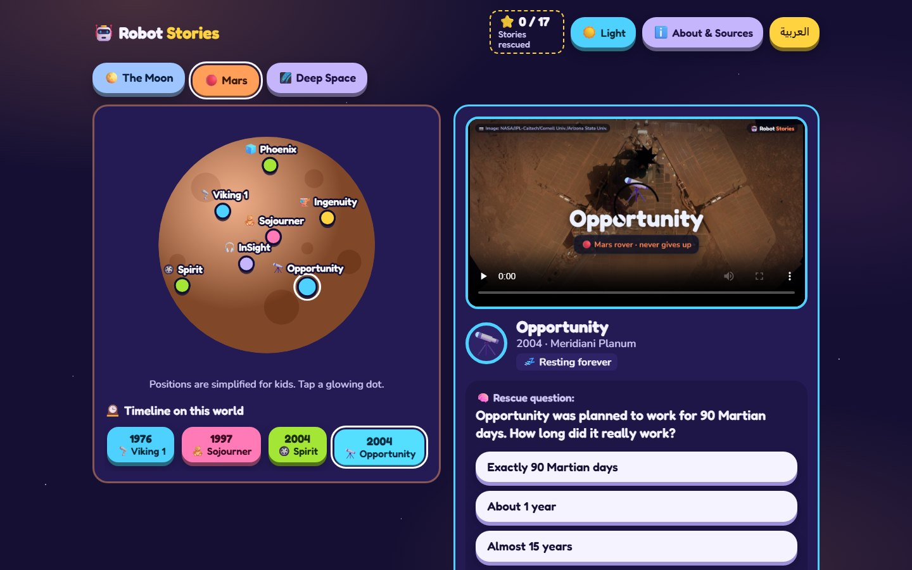
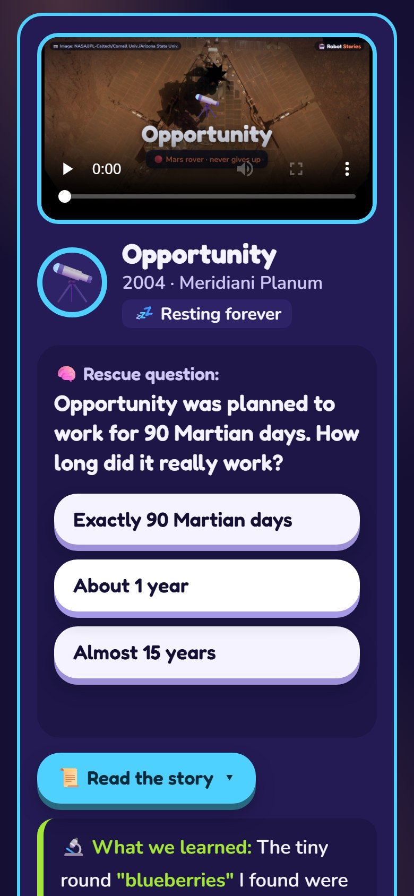
Real screenshots of our live site (computer and phone).
How it works
Six taps from curious to rescued
1
🌍
Pick a world
2
👆
Tap a robot
3
🎬
Watch its video
4
🔬
What we learned
5
🧠
Rescue question
6
🏅
Badge 1 / 17
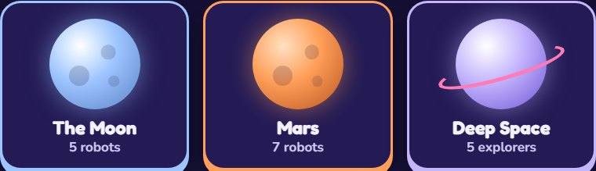
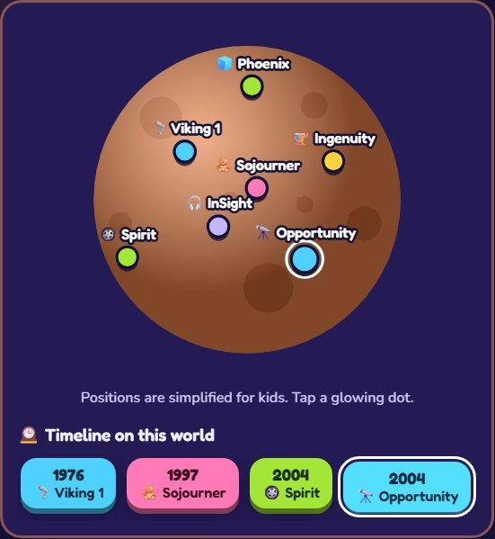
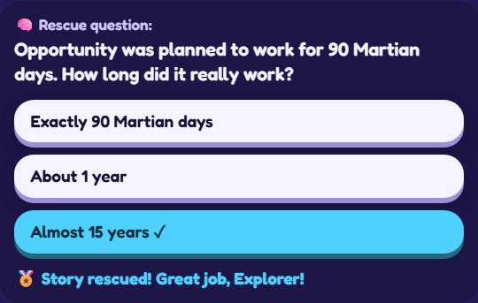
NASA data
Every fact and every picture is NASA's
17
robots
all from the hardware list in the challenge resources
3
NSSDCA records
1969-059C · 1971-063C · 1969-099C
28
NASA source pages
science.nasa.gov, jpl.nasa.gov, nasa.gov, NSSDCA, images.nasa.gov: linked on every robot page
69
NASA pictures & clips
67 images + 1 video clip from images.nasa.gov, 1 LRO camera image · all credited, 13 artist's concepts labeled
✔ Same text everywhere
Each sentence in a video is the exact sentence on the robot's page, checked by the team against that robot's NASA source.
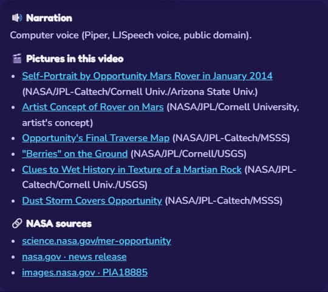
Live site: the "🔎 For teachers and parents" box on a robot page.
Impact
Made for every kid aged 9–14
💸
Free, no accountopen the link and play
📱
Phone-friendlylight pages, 2–3 MB per video
🌐
English + Arabicright-to-left, Arabic text and subtitles
📖
Easy to readabout a grade-4 reading level
♿
For everyonesubtitles, full story text, high contrast, reduced motion
🎉
Keeps kids goingbadges, stars and confetti
Next steps
- Arabic narration recorded by our team
- Test with real kids and teachers
- More robots: Curiosity, Perseverance…
- Classroom worksheets, starting in Palestine
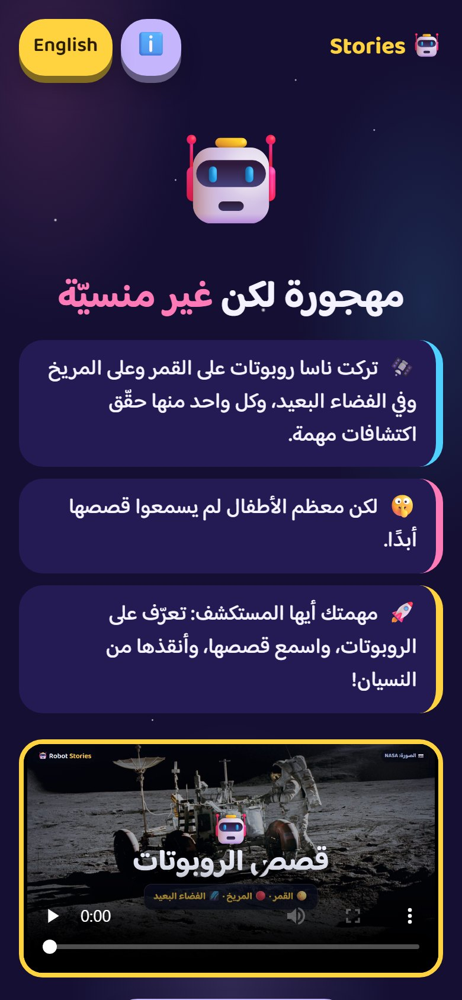
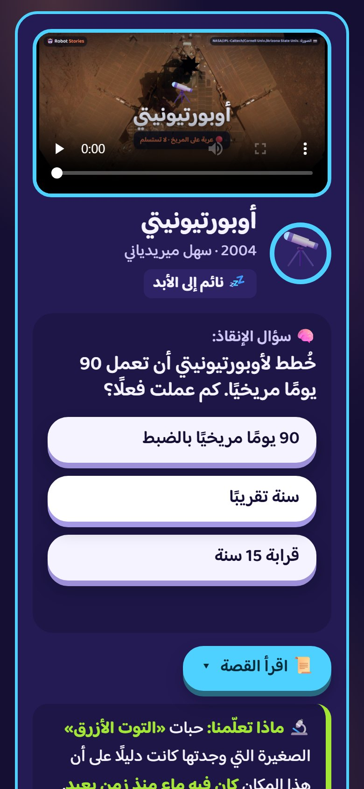
📷 Scan to try it
Try it now: free, no login
Rescue a robot story 🚀
mostafaalnatsheh53.github.io/robot-stories
Team The Final Countdown · Palestine Polytechnic University (PPU), Hebron
NASA Space Apps Challenge 2026, Nablus · Challenge: Abandoned but not Forgotten
Not an official NASA website. NASA images are used under NASA's media guidelines and credited individually; this does not imply NASA endorsement.
NASA Space Apps Challenge 2026, Nablus · Challenge: Abandoned but not Forgotten
Not an official NASA website. NASA images are used under NASA's media guidelines and credited individually; this does not imply NASA endorsement.